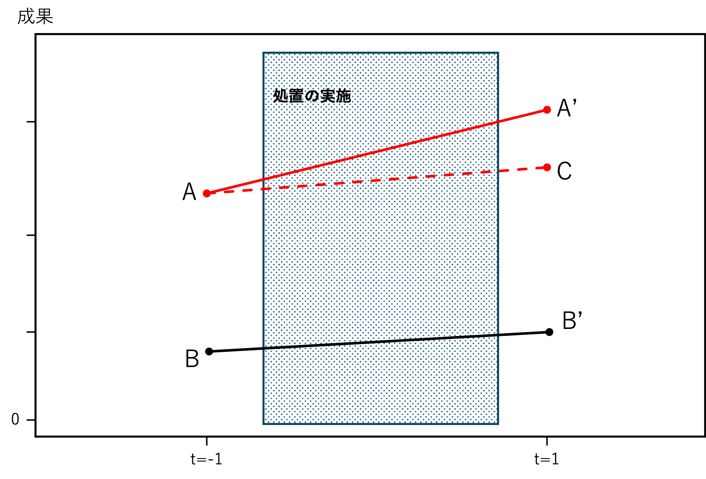

Chapter 19 コラム5（差の差の分析法）
本節では、疑似実験と呼ばれる構造を捉えた、差の差の分析法という手法を紹介する。ランダム化ができない中でもデータの構造をうまく使い、ある仮定のもとで因果効果に迫るのが、因果推論と呼ばれる方法である。特に、完全なランダム化ではないが観測個体にとって処置の選択権がなかったような状況を疑似実験と呼ぶ。そして、この構造を活用した分析手法が本節で紹介する差の差の分析法（Difference-in-Differences: DID）である。
DIDは企業や政府の行動による構造変化や、自然などによる外生ショック（感染症、異常気象、災害）を利用した分析手法である。自身の研究課題に関連する構造変化や外生ショックを見つけることができれば、フィールド実験よりも実現可能性が高い方法として、マーケティング領域でも多くの研究で採用されている。
DIDを行うためには、研究上着目する処置がある個人やグループには割り当てられているがそれ以外には割り当てられていない状況を特定し、その状況に対応する観察対象者の処置前と処置後のデータを有する事が必要となる。つまり、複数の観察個体に対する複数時点のデータを得てパネルデータセットを構築する必要がある。
DIDを理解するためには、処置に与える変化、処置群と統制（コントロール）群の特定、処置前・処置後のデータという、構造を踏まえる必要がある。ここで、DIDの必要性を理解するために、（1）前後比較と（2）群間比較という比較方法について説明する。まず前後比較とは、処置を受けた個体群を集め、このグループの処置前と処置後の結果を比較する方法である。例えば、企業業績の前年比較は典型的な前後比較である。しかしながら、前後比較では処置とは関係のないマクロトレンドなど影響をコントロールできないという限界がある。例えば、企業の取り組みや変化にあたる処置の有無に関わらず、景気や気象条件などの環境変化が企業業績が影響を与えることも考えられる。そのような場合、前後比較では自社にとって有利な環境の変化と処置による効果を見誤ってしまう。
一方で群間比較は、処置を受けた群と受けていない群間で着目する変数の値を比較する方法である。しかしながらこの方法では、16 で紹介したセレクションバイアスによる影響を見過ごしてしまう。ランダム化を介した処置の割り当てができない場合、処置の有無と（潜在）成果変数とが独立ではなくなってしまい、因果効果を推定できない。
これらの問題に対応するためにDIDでは、以下の図で示すように「差の差」に着目する。DIDにおいては（A）処置群の事前データ、（A’）処置群の事後データ、（B）統制群の事前データ、（B’）統制群の事後データ、の４種類のデータを用いる。このデータのうち、それぞれの群における事前事後の差（\(A-A'\) と \(B-B'\)）を求めたあとに、これらの差の差（\((A-A')-(B-B')\)）を捉えることで平均処置効果を求める。

処置郡内の前後比較（\(A-A'\)）には、処置による効果に加え、セレクションバイアスは含まれていないがマクロトレンドなどに代表される時系列変化による影響が含まれている。そして処置による効果と時系列変化の影響はどちらも観察できない。一方で統制群内の前後比較（\(B-B'\)）には処置による効果は含まれておらず、（他の要素を一定だとするならば）時系列変化による影響だけが含まれているはずである。そのため、差の差を捉えることで、前後比較（\(A-A'\)）に含まれている情報のうち時系列変化に関する影響だけ排除し、処置による効果を抽出しようという方法である。下図における点Cは「もし処置がなかった場合の処置群の成果」を示しており、観察できない情報である。\(A-A'\)から\(B-B'\)を引くことで、仮想的に \(A-C\) を分析しようというのがDIDの直感的な説明である。 
分析においては、処置群であれば1を取るような処置群ダミー（\(D^{treat}_{i}\)）と、処置後の観測であれば1を取るような事後ダミー（\(D^{post}_{t}\)）を用いて、以下のような回帰モデルを採用する：
\[ Y_{it}=\alpha+\beta(D^{treat}_{i}\times D^{post}_{t})+\gamma D^{treat}_{i}+\delta D^{post}_{t}+u_{it} \] 上記のモデルにおける係数\(\beta\)を確認、検定することで疑似実験の効果についての知見を得る。
なお、分析においては 18 で紹介した、以下の二方向の固定効果（\(\mu_i\)と\(\lambda_t\)）を含む回帰モデルで推定することも可能である。
\[ Y_{it}=\mu_i+\lambda_t+\beta(D^{treat}_{i}\times D^{post}_{t})+\gamma D^{treat}_{i}+\delta D^{post}_{t}+u_{it} \]
このとき、処置群ダミー（\(D^{treat}_{i}\)）と事後ダミー（\(D^{post}_{t}\)）はそれぞれ、観測個体固定効果（\(\mu_i\)）と時間固定効果（\(\lambda_t\)）に吸収されてしまうため、結果的に以下のモデルでDID推定を行うことができる。 \[ Y_{it}=\mu_i+\lambda_t+\beta(D^{treat}_{i}\times D^{post}_{t})+u_{it} \] このように、回帰モデルを用いてDID推定を行う場合には、パネルデータ分析、特に固定効果モデルに対する知識も必要になる。
なお、DIDも他の手法と同様、平均処置効果を得るためにはいくつかの仮定を満たす必要がある。具体的には、SUTVAなど（16 参照）因果推論に関わる基本的な仮定に加え、並行トレンド（Parallel trend）の仮定を満たす場合、DIDによって（処置群における）平均処置効果（Average Treatment Effects on Treated）を分析することが可能であることが知られている。並行トレンドとは、処置がない場合、処置群と統制群の成果の平均のトレンド（時間変化）が等しいという仮定である。そのため、処置がない場合、横軸を時間、縦軸を成果変数（の平均値）とした際の両群の成果に関する曲線（直線）は並行になる（上図におけるA-CとB-B’の直線は並行になる）ことを意味する。
また、処置効果の異質性がないことも重要である。平均処置効果がグループや時間によって変化する場合、推定結果にバイアスがかかることが知られている。例えば、成果等による介入効果が時間によって変化する（長期的に効果が弱まるなどの）場合や、処置効果が特に処置群に強い影響を与えうる（影響を強く受けそうな群に処置が行われている）場合には異質な処置効果（Heterogenous treatment effects）として、問題になる。これに加えて、SUTVAでも議論したスピルオーバーがないこともDIDでは重要かつ満たすことが容易ではない仮定となる。自然災害や紛争など地理的要因に紐づいた構造変化を捉える場合、少なからず地理的な近接性に伴うスピルオーバー効果が生まれる可能性があるため、注意が必要となる。
上記の仮定を満たしているかについて、正当化のための理想的な方法はない。図示化や論理的説明（産業的知識）が用いて、上記の仮定が満たされていることを説得的に記述することが求められる。また、その説明の補助として統計的検定が併用されることも多い。